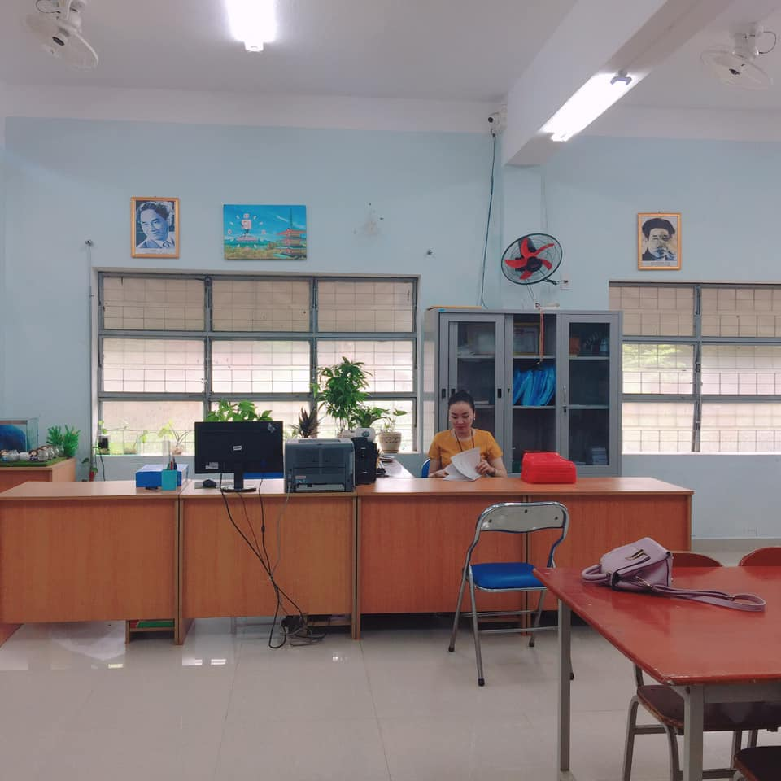

Giới thiệu thư viện
"Một cuốn sách hay cho ta một điều tốt, một người bạn tốt cho ta một điều hay".
Từ lâu thư viện đã được coi là “kho vàng” của nền văn hóa dân tộc, là một bộ phận không thể thiếu trong văn hóa học đường. Thư viện bổ sung và cập nhật những kiến thức mới, những phương pháp giảng dạy tiên tiến làm cho việc học tập và giảng dạy thêm sinh động và hấp dẫn. Thư viện là trung tâm thông tin ở nhiều dạng khác nhau, tạo điều kiện cho người sử dụng tiếp cận nhanh chóng đến tri thức. Đúng vậy, đọc sách là cách học tốt nhất và không có cách giải trí nào rẻ hơn đọc sách, cũng không có sự thú vị nào bền lâu hơn việc đọc sách. Đọc sách ngoài tác dụng giải trí lành mạnh còn giúp mỗi chúng ta hoàn thiện nhân cách của chính mình. Sách giáo dục cho mỗi chúng ta biết yêu thương, quý trọng, đoàn kết với mọi người, biết nói lời hay, làm việc tốt. Và sách chính là cơ hội để chúng ta mở rộng tầm nhìn với thế giới.
Nhìn lại chặng đường đã qua, thư viện nhà trường đã thay đổi gần như toàn diện. Trước khi trường được xây dựng lại, thư viện chỉ là một phòng đọc nhỏ chia làm đôi: 2/3 diện tích dành cho hoạt động đọc, còn lại 1/3 diện tích phòng dùng làm kho sách chung cho toàn bộ các sách từ sách giáo khoa, sách tham khảo, sách nghiệp vụ đến các loại sách đạo đức,… mang tính chất 1 kho sách đóng, mọi hoạt động tìm sách, chọn sách của GV, HS đều phải thông qua thủ thư. Do đó lượt bạn đọc đến thư viện hàng ngày, hàng tuần rất ít ỏi bởi bạn đọc không hiểu hết được tình hình kho sách để có hướng lựa chọn cho mình…
Giờ đây, phòng thư viện được nâng cấp, sửa chữa, xây dựng lại khang trang hơn, sạch đẹp hơn rất nhiều với đầy đủ các thiết bị chiếu sáng, quạt mát.

Được đặt ở nơi có vị trí thuận lợi trong việc phục vụ đọc và mượn sách, báo của giáo viên, học sinh. Với tổng diện tích là 120 m2 bao gồm: kho sách, 1 phòng đọc dành cho học sinh và cho giáo viên. Có đầy đủ giá, tủ chuyên dùng trong thư viện để sắp xếp sách, báo, tạp chí, bản đồ, tranh ảnh giáo dục, băng đĩa giáo khoa. Có đủ bàn ghế, ánh sáng, quạt điện, máy tính, máy in có kết nối mạng Internet … đảm bảo các điều kiện tốt nhất để quản lí, tổ chức các hoạt động của thư viện và khai thác truy cập thông tin. Vốn tài liệu tổng kho hiện có: 15.969 bản sách với các loại tham khảo, nghiệp vụ, giáo khoa.
Thư viện có nội quy thư viện, khẩu hiệu thư viện, lịch hoạt động của thư viện, bảng hướng dẫn cán bộ giáo viên, học sinh sử dụng tài liệu trong thư viện. Không chỉ trang trí hình ảnh, thư viện còn đẹp hơn với những bảng biểu nội quy, hướng dẫn, câu trích danh ngôn…
Thư viện thành lập tổ cộng tác thư viện và đội học sinh tích cực ngay từ đầu năm học nhằm giúp cán bộ thư viện tổ chức tốt các hoạt động thư viện. Ngay sau khi thành lập, cán bộ thư viện phân công rõ nhiệm vụ của từng người và các công việc mà đội học sinh tích cực có thể tham gia giúp cán bộ thư viện như: Xử lý tài liệu, hướng dẫn bạn đọc tìm sách, viết phiếu mượn về nhà, làm vệ sinh thư viện…
Tổ chức tuyên truyền, giới thiệu sách mới hàng tháng nhằm kịp thời thông tin sách mới đến toàn thể giáo viên và học sinh trong trường. Ngoài hoạt động tuyên truyền miệng, thư viện tiếp tục duy trì hình thức tuyên truyền trực quan trên bảng giới thiệu sách mới tại thư viện.
Thư viện tiến hành kiểm kê mỗi năm 1 lần. Bên cạnh việc sắp xếp sách truyện ngăn nắp, gọn gàng, đúng quy định, đảm bảo dễ thấy, dễ lấy, đôn đốc bạn đọc thường xuyên trong việc giữ gìn tài liệu, làm vệ sinh kho giá thường xuyên…,cán bộ thư viện còn khắc phục những cuốn sách bị rách, nát bằng cách can, dán, dập ghim lại để tái sử dụng tài liệu, tránh lãng phí.
Mỗi năm nhà trường tổ chức Ngày hội đọc sách một lần theo từng thời điểm với từng tên hoạt động khác nhau nhằm tạo cho các em học sinh có thói quen hình thành văn hóa đọc.
Từ những kết quả đã đạt được, thư viện nhà trường đã đạt thư viện chuẩn năm 2013 theo quyết định số 1965/QĐ-SGDĐT, ngày 02 tháng 7 năm 2013 của Sở Giáo dục và Đào tạo thành phố Đà Nẵng
Trong những năm học qua, dưới sự chỉ đạo sát sao của Sở GDĐT đặc biệt là sự quan tâm của lãnh đạo nhà trường, hoạt động thư viện của nhà trường đã thực sự đi vào hoạt động. Thư viện không chỉ là nơi phục vụ nhu cầu tìm tin của các em HS, mà còn là nơi giải trí lành mạnh cho các em sau những giờ học căng thẳng. Thói quen đọc sách của các em cũng đã dần hình thành và phát triển, từ sự đam mê và yêu thích đọc sách ấy, các em học sinh đã có thể tự tin hơn, đồng thời kỹ năng đọc, kỹ năng ghi nhớ và tư duy tốt hơn rất nhiều. Đó thực sự là những lợi ích tốt đẹp mà thư viện đã mang lại.